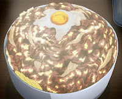

Persona 4 Mega Beef Bowl Challenge!
Index

Description
The famous beef bowl from the Yasogami High School Diner in Persona 4.
Ingredients
- 2 Cups Water
- 2 tsp. Dashi Powder
- 1 Tbsp. Aji-Mirin Sweet Cooking Rice Seasoning
- 1 Tbsp. Sugar
- 2 Tbsp. Soy Sauce
- 1 tsp. Worcestershire Sauce (optional)
- 1/2 tsp. Fresh Ginger (optional)
- 1/2 tsp. Minced Garlic (optional)
- 2 Onions, sliced
- As much thinly sliced steak as possible
- 2 tsp. Cornstarch
- Fluffy White Rice
- Small Egg, poached
Steps
-
In a large pot bring the 2 cups of water to a boil & add the dashi
powder. Stir until dissolved & then add the mirin, sugar, soy sauce,
onion slices, & optional Worcestershire, ginger, & garlic (I love it
with these flavors!). Stir & continue to boil gently until the onions
are caramelized. Reduce heat to medium.
-
Add the thinly sliced steak to the onions & sauce. Push the meat into
the sauce & turn over occasionally to cook fully (this will only take a
few minutes). Break the meat apart with your spoon (or two forks) & mix
well with the onions & sauce.
-
Once the meat is cooked & incorporated, remove the meat & onions from
the sauce into a large bowl using a slotted spoon or tongs. Leave the
sauce in the pot. Using a measuring cup (or other small cup) scoop out a
small amount of sauce & dissolve the cornstarch into it. Pour the
cornstarch mixture into the pot & stir. Bring the sauce back to a boil &
let it cook until it thickens. Reduce the heat to a low simmer to let it
thicken more.
-
At this point you can put the onions & meat back into the pot with the
sauce or pour the sauce into the bowl with the onions & meat. Serve
mounded on top of fluffy rice with the poached egg added last (or not at
all). And have confidence that you can finish it! Understanding!
Knowledge! Courage! Diligence!